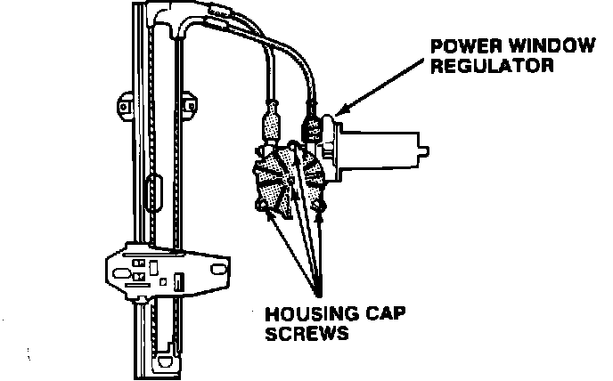
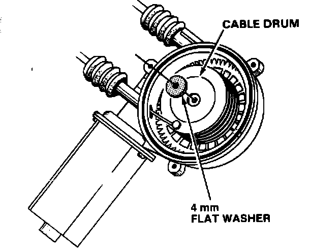
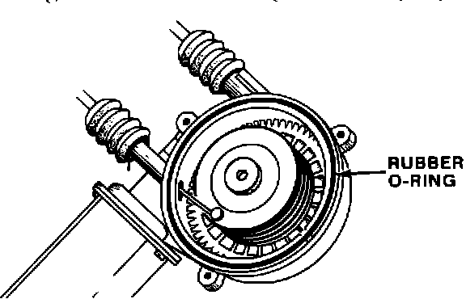
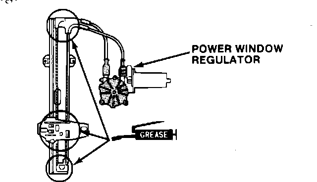

Rear Power Window - Crackling Noise
87acura01December 14, 1987
YEAR MODEL APPLICATION
1987 INTEGRA up to
DA3...0032954
87-037
Integra Rear Power Window Noisy
PROBLEM A crackling noise occurs when the window is almost closed.

CORRECTIVE ACTION Install a special 4 mm flat washer in the rear power window regulator.
1. Remove the rear door panel and rear power window regulator. (Refer to the door panel diassembly procedure in Section 20 of the Service Manual.)
2. Remove the four housing cap attachment screws from the regulator assembly.

3. Place the special 4 mm flat washer on the center of the cable drum (see Parts Information).

4. Reinstall the housing cap.
Note: be sure the rubber O-ring is in place on the regulator before installing the housing cap.

Torque: 1.4 N-m (14 kg-m, 7 ft.lbs.)
5. Reinstall the power window regulator
Note: Grease the sliding surfaces of the window regulator where shown.
6. Assemble the door in the reverse order of disassembly.
PARTS INFORMATION
Flat washer: P/N 94103-04800
WARRANTY CLAIM INFORMATION
Operation number: 829145 (left side) 830145 (right side)
Flat rate time: 0.7 hour per side
Failed P/N: 76320-SE7-003 (left side)
76310-SE7-003 (right side)
Defect code: 042
Contention code: B07